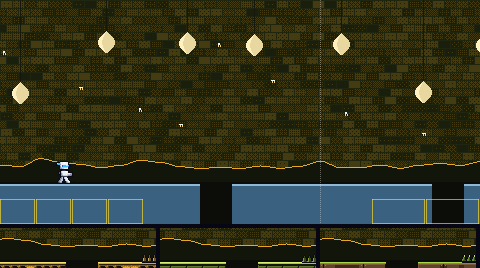
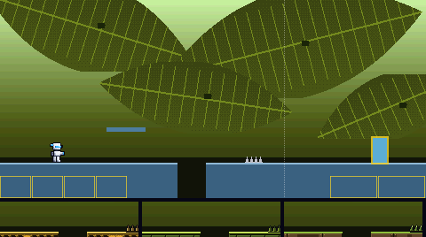
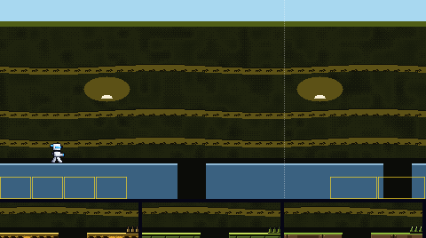
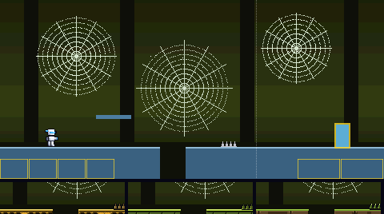
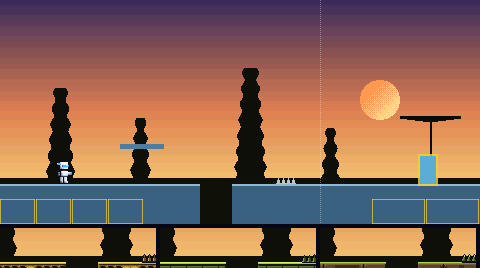
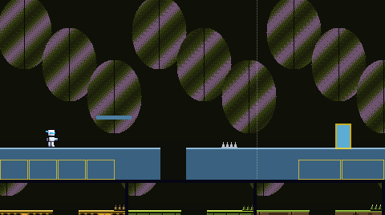
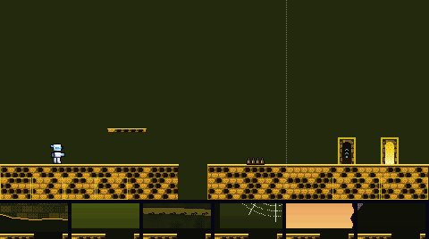
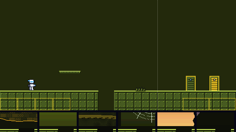
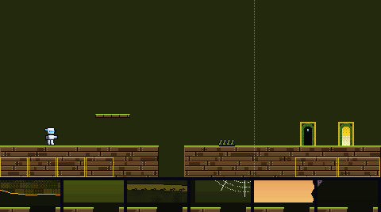

The way to Swarm Man's door. Six backdrops, and three materials (each a floor, platform, spikes, boss door and exit door), all built from his colours. Batch 2 of 3.
Paused by the owner on 6 Nov 2026, in their words: "I'll need to pause on Flying, psychic, bug and poison because artistically they could go many ways, as you see in poison: toxins, corrosion, radiation, smog, sewage... too many angles that would fundamentally change the weapon/boss/arena hazards, backdrop". These variants stay here for reference. Nothing more is drawn for this slice until its direction is settled.
Each is shown behind today's plain pieces, so only the backdrop changes. The strip under it is its pit edge with floors A, B and C in front. The two marked MOVING scroll in layers, the far ones slower; their pictures move.






Each shows the floor with a pit, a platform, spikes, the boss door (left) and the exit door (right), in front of today's flat colour. The strip under it is its pit edge against backdrops 1 to 6. The contrast numbers are the worst against any of the six; the game asks at least 2 for the ground, 4.5 for its lit edge and 4.5 for the white player on it.


